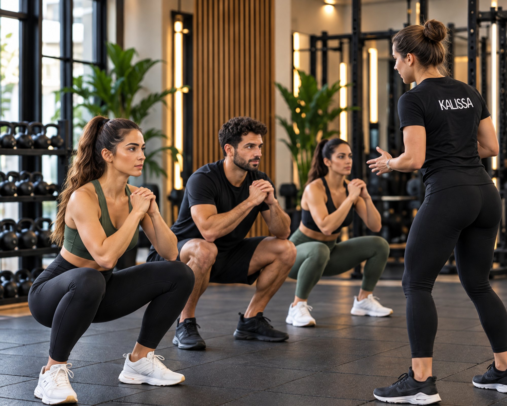
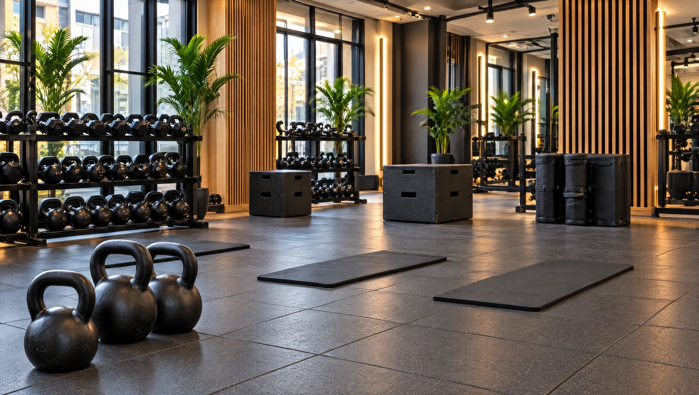

Yeni başlayanlar gruba katılabilir mi?
Evet. Eğitmen, parkurdaki hareketleri deneyimine göre uyarlar; grupla birlikte ama kendi seviyende çalışırsın.
GRUP FONKSİYONEL ANTRENMAN
Grubun enerjisine katıl. Eğitmen eşliğinde,
kendi seviyene uygun bir başlangıç yap.

Aynı hedefleri paylaşan
kişilerle daha güçlü bir deneyim.
Uzman eğitmenlerimizle
güvenli ve etkili bir antrenman.
Deneyimine uygun modifikasyonlarla
adım adım ilerle.
Grup fonksiyonel antrenmanında birlikte
hareket ederken kendi ritmini koru. Dersin akışını
ve başlangıç seviyeni eğitmeninle birlikte
değerlendirelim.
Özetle KalissaFit Team; pazar sabahları eğitmen eşliğinde, sınırlı sayıda katılımcıyla buluşan bir grup fonksiyonel antrenman dersi. Dersler istasyonlu bir parkur üzerinden ilerliyor. Aşağıda dersin akışını, topluluğu ve gruba nasıl katılabileceğini anlattık.
Grup fonksiyonel antrenman, gündelik hareketlere dayanan egzersizleri bir ekip enerjisiyle bir araya getirir. KalissaFit Team derslerinde eğitmenimiz her hafta yeni bir parkur kuruyor. Parkurdaki istasyonlarda TRX, kettlebell, direnç lastikleri ve kondisyon bisikleti gibi ekipmanlarla hem kuvvet hem kardiyo çalışırsın. Böylece tüm vücudun dengeli biçimde çalışır. Kısacası grup fonksiyonel antrenman, kişisel ilgiyle topluluk motivasyonunu tek bir buluşmada birleştirir.
Sonraki konuBir ders nasıl geçer?Ders, grubun birlikte yaptığı bir ısınmayla başlar. Sonra eğitmen parkuru ve istasyonları tanıtır; her harekette dikkat etmen gerekenleri gösterir. Bu tanıtımdan sonra istasyonlar arasında dönerek çalışırsın. Eğitmenin bu sırada formunu takip eder ve hareketleri seviyene göre uyarlar. Dersin sonunda kısa bir soğuma ve esneme bölümüyle tempoyu birlikte düşürürsünüz.
Sonraki konuKimler için uygun?Grubun enerjisiyle daha motive olanlar için KalissaFit Team iyi bir seçenek. Yeni başlıyorsan endişelenme; çünkü eğitmen hareketleri deneyimine göre sadeleştirir ya da zorlaştırır. Böylece grupla birlikte ama kendi seviyende çalışırsın. Haftayı hareketle kapatmak ve yeni insanlarla tanışmak isteyenler de bu buluşmalardan keyif alır. Sağlık durumunla ilgili bilmemiz gereken bir şey varsa, derse gelmeden önce bize yazman yeterli.
Sonraki konuToplulukKalissaFit Team bir antrenmandan fazlası; aynı hedefe odaklanan insanların buluştuğu bir topluluk. Ders bitince çoğu zaman kahvelerimizi birlikte içiyoruz; bazı pazarlar sohbet uzun bir kahvaltıyla devam ediyor. Havanın güzel olduğu günlerde sahilde yürüyüşe çıktığımız, hatta voleybol oynadığımız da oluyor. Bu sayede pazar sabahları, haftaya enerjik başlamanı sağlayan bir rutine dönüşüyor. Üstelik grup motivasyonu, düzenli devam etmeyi çok daha kolay hâle getiriyor.
Sonraki konuDiğer derslerlePazar sabahki grup dersi, hafta içi programınla iyi bir denge kurar. Örneğin birebir hedeflerin için personal trainer derslerini, duruş ve esneklik için Reformer Pilates seanslarını ekleyebilirsin. Kısa ve yoğun bir hafta içi seçeneği arıyorsan EMS antrenmanı da düşünebilirsin. Dolayısıyla haftalık düzenini hedeflerine ve günlük tempona göre birlikte planlıyoruz.
Sonraki konuGruba katılmakKalissaFit Team, pazar sabahları Kalamış’taki stüdyomuzda bir araya geliyor. Katılımcı sayısını sınırlı tutuyoruz; böylece eğitmen herkesin formunu takip edebiliyor. Bu yüzden yerini önceden ayırman gerekiyor. Güncel saati ve boş yer durumunu öğrenmek için bize yaz; ilk grup fonksiyonel antrenman dersini birlikte planlayalım. Sahile yakın konumumuz, ders sonrası yürüyüş için de Kadıköy’ün en keyifli rotalarından birine açılıyor.
Başlamaya hazırsanDeneme dersini planla
Hareketi günlük hayatına katmak için
ilk adımı birlikte atalım.

Evet. Eğitmen, parkurdaki hareketleri deneyimine göre uyarlar; grupla birlikte ama kendi seviyende çalışırsın.
KalissaFit Team dersleri pazar sabahları Kalamış’taki stüdyomuzda yapılıyor. Kontenjan sınırlı olduğu için güncel saati ve yer durumunu bize yazarak öğrenebilirsin.
Rahat bir spor kıyafeti, spor ayakkabısı, havlu ve su şişesi yeterli. İstasyonlardaki ekipmanı biz hazırlarız.
WhatsApp’tan yaz, birlikte yanıtlayalım.
Sorularını paylaş, ilk dersini birlikte planlayalım.